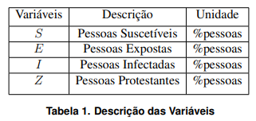

Simulação da Dinâmica de Disseminação de Fake News
Todas as variáveis do sistema representam a quantidade de pessoas em cada uma das quatro categorias. No entanto, esta quantidade não é absoluta, ou seja, não conta, literalmente, quantas pessoas pertencem à categoria. Na verdade elas representam as quantidades com relação a um total de pessoas implícito, portanto, uma razão entre as pessoas em certa categoria e todas as pessoas que podem ou não saber da notícia, ou seja, (pessoas/pessoas = 1), logo, são variáveis com grandeza/unidade adimensional. Abaixo, temos a Tabela 1, resumindo as variáveis do sistema:
Além disso, como cada uma dessas variáveis são uma razão do total, logo
Os parâmetros são valores que determinam o comportamento geral do sistema. Alguns representam a taxa em que duas categorias de pessoas entram em contato e outras determinam a transição destas.
No termos do sistema acima podemos perceber algumas relações que possuem padrões em comum. Em quase todos os termos, há uma relação multiplicativa entre duas variáveis, por exemplo no termo ISβ as variáveis I e S se multiplicam, representando a quantidade de contato entre pessoas Infectadas e Suscetíveis, ou seja, IS é uma permutação simples entre pessoas dessas duas categorias. Podemos utilizar a notação S-I para representar esse contato.
Além disso, para todo contato há um parâmetro que o pondera, ou seja, a taxa de contato. Novamente no termo ISβ, o parâmetro é β. Portanto, o termo completo indica, dentre todos os contatos possíveis, quantos de fato ocorrem por hora.
Ainda há outra relação característica no sistema, que podemos observar, por exemplo, no termo ISβp1. O termo ISβ já conhecemos, então sua relação com a probabilidade p1 significa que, dentre os contatos S-I que de fato ocorrem por hora, quantos Suscetíveis transicionam diretamente para Infectados. Analogamente, ISβ(1−p1) é quando não ocorre essa transição direta, ou seja, a transição é de Suscetível para Exposto. Podemos utilizar a notação S → I e S → E para representar essas transições, respectivamente.
Enfim, temos o termo Eε. O parâmetro ε é a taxa de incubação, ou seja, a magnitude em que pessoas Expostas tornam-se Infectadas sem precisar de qualquer contato por hora. Portanto, o termo completo indica quantas Expostas tornam-se Infectadas sem precisar de qualquer contato.